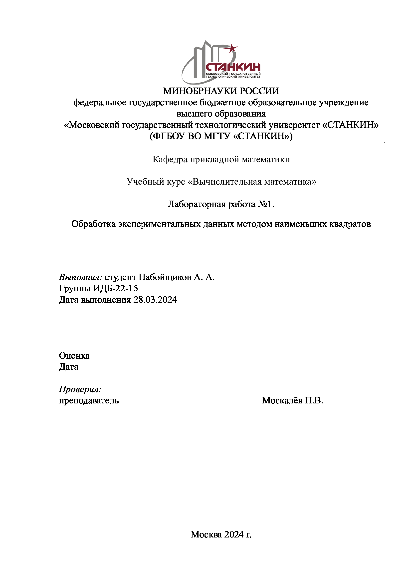
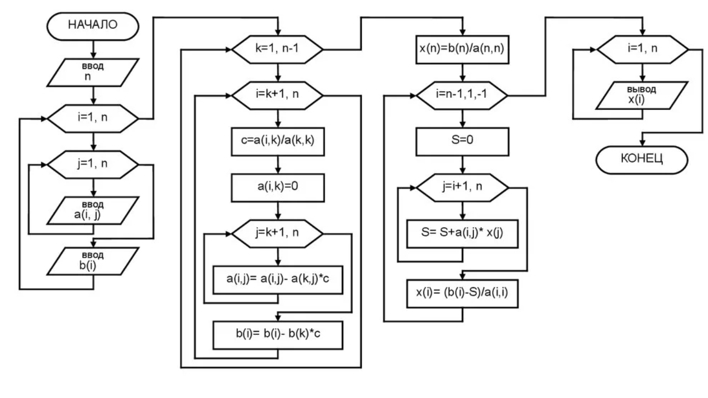
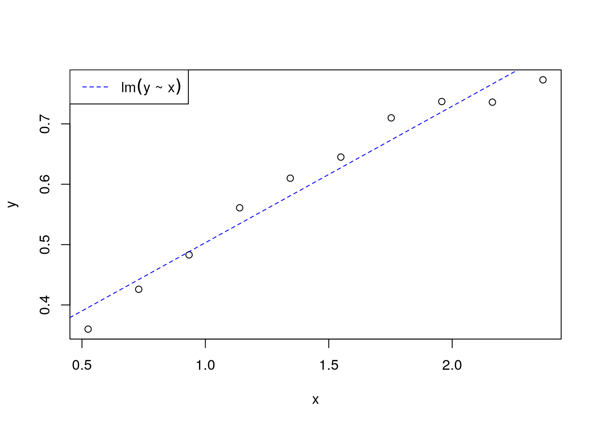
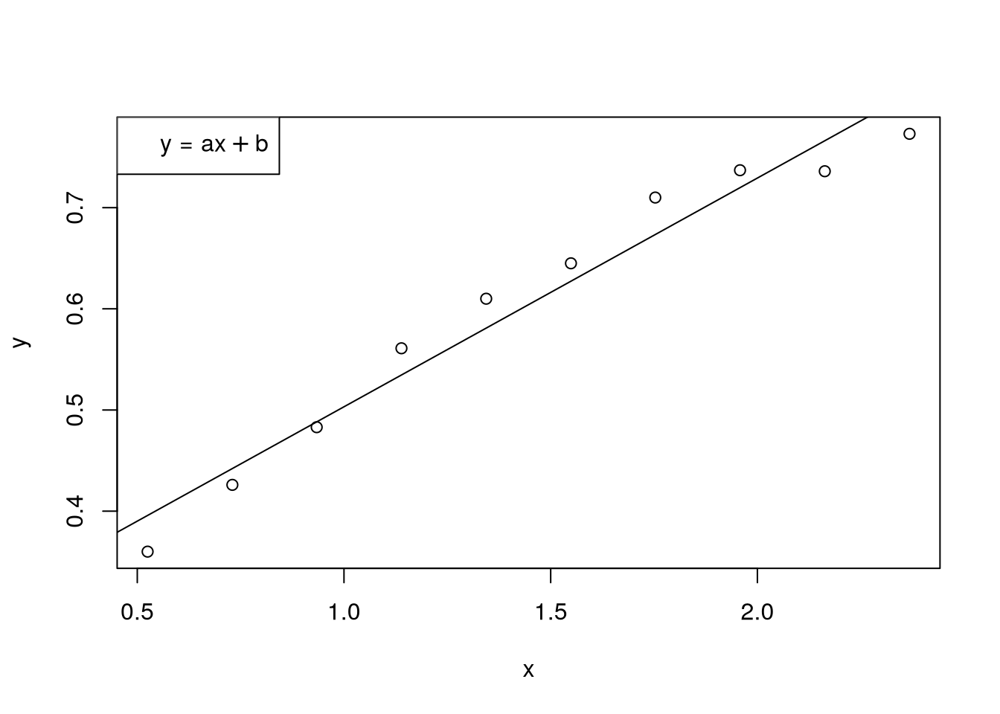
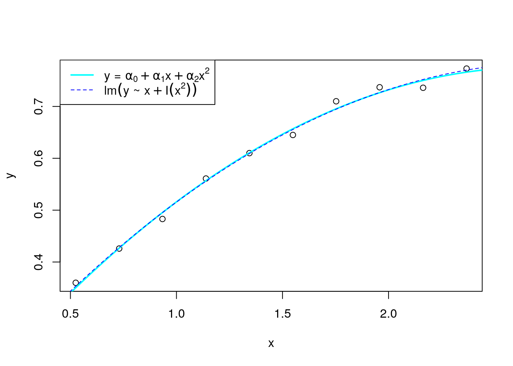
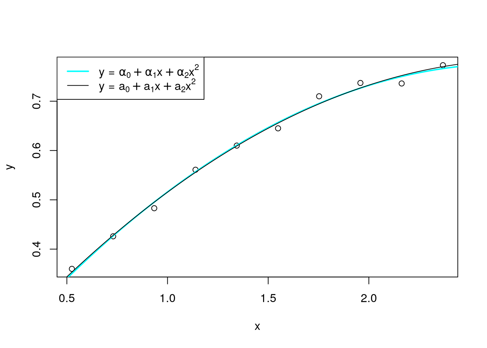

x <- c(0.525, 0.730, 0.934, 1.139, 1.344, 1.549, 1.753, 1.958, 2.163, 2.368)
y <- c(0.360, 0.426, 0.483, 0.561, 0.610, 0.645, 0.710, 0.737, 0.736, 0.773)
Вариант 15
Цель работы: изучить метод наименьших квадратов и применить его на практике для получения коэффициентов линейной и квадратичной функциональных зависсимостей.
Входные данные
Код алгоритов Метода Гауса и нахождения определителя
gaussian_elimination <- function(A, b) {
n <- nrow(A)
Ab <- cbind(A, b)
# Прямой ход
for (i in 1:(n - 1)) {
if (Ab[i, i] == 0) {
message("Алгоритм не может продолжаться")
return(NULL)
}
for (j in (i + 1):n) {
factor <- Ab[j, i] / Ab[i, i]
Ab[j, ] <- Ab[j, ] - factor * Ab[i, ]
}
}
# Обратный ход
x <- numeric(n)
x[n] <- Ab[n, n + 1] / Ab[n, n]
for (i in (n - 1):1) {
x[i] <- (Ab[i, n + 1] - sum(Ab[i, (i + 1):n] * x[(i + 1):n])) / Ab[i, i]
}
return(x)
}determinant <- function(matrix) {
if (ncol(matrix) == nrow(matrix)) {
if (ncol(matrix) == 1) {
return(matrix[1, 1])
} else if (ncol(matrix) == 2) {
result <- (matrix[1, 1] * matrix[2, 2]) - (matrix[1, 2] * matrix[2, 1])
return(result)
} else {
det <- 0
for (i in 1:ncol(matrix)) {
sign <- (-1)^(i+1)
minor <- matrix[-1, -i]
det <- det + sign * matrix[1, i] * determinant(minor)
}
return(det)
}
} else {
return("Матрица не квадратная")
}
}
Для линейной апроксимирующей функции
Система линейных алгебраических уравнений
\[y_i = a x_i + b + \delta_i\]
\[
\begin{cases}
a \sum_{i=1}^n x_i^2 + b \sum_{i=1}^n x_i = \sum_{i=1}^n x_i y_i \\ \\
a \sum_{i=1}^n x_i + b n = \sum_{i=1}^n y_i
\end{cases}
\]

Получение значений
k11 <- sum(x^2)
k12 <- sum(x)
b1 <- sum(x * y)
k21 <- sum(x)
k22 <- length(x)
b2 <- sum(y)
m1 <- matrix(c(k11, k12,
k21, k22), ncol=2, byrow=T)
m1_a = matrix(c(b1, k12,
b2, k22), ncol=2, byrow=T)
m1_b = matrix(c(k11, b1,
k21, b2), ncol=2, byrow=T)
det_m1 <- determinant(m1)
det_a = determinant(m1_a)
det_b = determinant(m1_b)
a = det_a / det_m1
b = det_b / det_m1
a_accurate <- coef(f1)[2]
b_accurate <- coef(f1)[1]
a_abs_err <- abs(a_accurate - a)
b_abs_err <- abs(b_accurate - b)
a_rel_err <- a_abs_err / abs(a_accurate)
b_rel_err <- b_abs_err / abs(b_accurate)\(a_{точн.} = 0.2260958 \quad a_{получ.} = 0.2260958\)
\(b_{точн.} = 0.2770976 \quad b_{получ.} = 0.2770976\)
\(\Delta a = 8.3266727\times 10^{-17} \quad \delta a = 3.6828066\times 10^{-16}\)
\(\Delta b = 7.2164497\times 10^{-16} \quad \delta b = 2.604299\times 10^{-15}\)

Для квадратичной апроксимирующей функции
Система линейных алгебраических уравнений
\[ y_i = a_0 + a_1 x_1 + a_2 x_i^2 + \delta_i \]
\[ \begin{cases} a_0 \sum_{i=1}^n x_i^2 + a_1 \sum_{i=1}^n x_i + a_2 n = \sum_{i=1}^n y_i \\ \\ a_0 \sum_{i=1}^n x_i^2 + a_1 \sum_{i=1}^n x_i^2 + a_2 x_i = \sum_{i=1}^n x_iy_i \\ \\ a_0 \sum_{i=1}^n x^4 + a_1 \sum_{i=1}^n x_i^2 + a_2 \sum_{i=1}^n = x_i^2y_i \end{cases} \]
Точные коэффициенты
as_accurate <- c(0.120, 0.486, -0.090)
Получение значений
k11 <- sum(x^2)
k12 <- sum(x)
k13 <- length(x)
b1 <- sum(y)
k21 <- sum(x^3)
k22 <- sum(x^2)
k23 <- sum(x)
b2 <- sum(x*y)
k31 <- sum(x^4)
k32 <- sum(x^3)
k33 <- sum(x^2)
b3 <- sum(x^2 * y)
bs <- c(b1, b2, b3)
m2 <- matrix(c(k11, k12, k13,
k21, k22, k23,
k31, k32, k33), ncol=3, nrow=3, byrow=T)
as_my <- rev(gaussian_elimination(m2, bs))
res_solve <- solve(m2, bs)
as_abs_err = abs(as_accurate - as_my)
as_rel_err = as_abs_err / abs(as_my)\(\alpha_{точн.} = (0.12, 0.486, -0.09)^T\)
\(a_{получ.} = (0.1300611, 0.4696716, -0.084198)^T\)
\(\Delta a = ( 0.0100611, 0.0163284, 0.005802)^T\)
\(\delta a = (0.0773566, 0.0347657, 0.0689086)^T\)

Вывод
Были получены коэффициенты линейной и квадратичной зависсимостей методом Краммера и Гауса, построены графики функций, посчитаны погрешности. Графики, построенные по найденным коэффициентам, совпали с ожидаемыми в рамках погрешности.